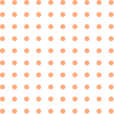
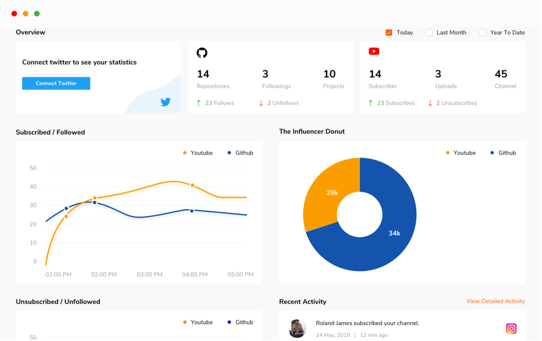

<div fxLayout="column" fxLayoutGap="10vh">
  <div class="get-started-container">
    <div>Your social tribe on a single dashboard</div>
    <div class="primary-text">Connect your socials in one place</div>
    <button class="get-started-button" mat-button cdkFocusInitial (click)="navigateToLogin()">Get Started</button><br />
    
  </div>
  <div>
    
  </div>
  
</div>
